One case from scan to print jobs, step by step: what you see at each step, what to do, and what to check before you approve.
About these pictures. Every screenshot is from the app itself, run on the de-identified upper-jaw scan of one unilateral cleft case. No names appear, and the dates are invented for the example. MoldStudio is a research alpha and not a medical device: check and fit every plate yourself.
Before you start
Finding your way around
Along the top is the step rail: Case, Anatomy, Segments, Plan, Plates, Print, Follow-up. Each step shows its state: not yet, review, approved, building, failed, or stop when a finding needs attention. On the left, the inspector shows the open step, with Approve and continue and Send back at its foot. Above the 3D view, the viewport bar has Occlusal, Front, Left and Right views and the step's display options. Along the bottom, the plate strip shows every planned plate, its date and its state.
You approve one step at a time, and the app builds the next step as soon as you do. If you change something upstream, the approvals that depended on it are withdrawn, and the step says which ones.
Step 0
Start a case
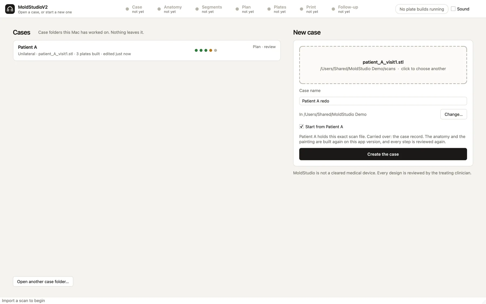
The start screen. Your cases are listed on the left with their step progress. Choosing a scan you have used before offers to start from that case.
You see
The cases worked on on this Mac, each with its step states, and a New case panel.
You do
Choose the scan and name the case, for example Patient A. If you used the same scan file before, the app offers to bring over the cleaning, case record and cleft type (never the painting).
De-identify file and folder names before importing: the case records where the scan came from.
Step 1
Case
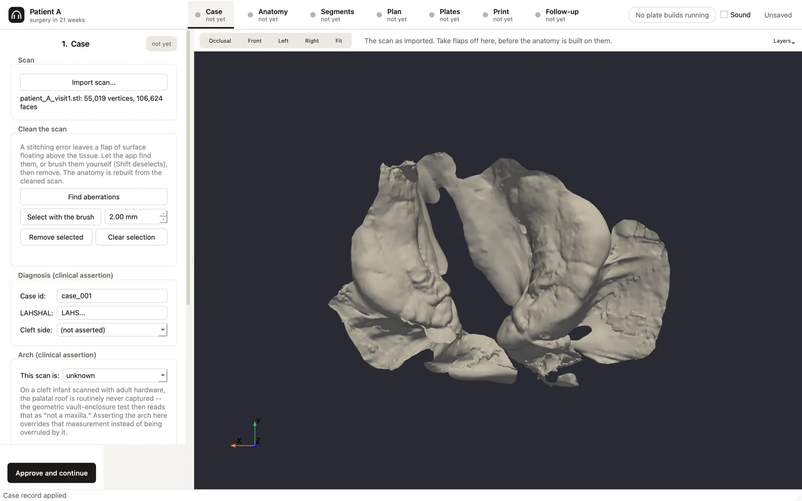
The imported scan in the Case step. The case ID is an opaque code, and LAHSHAL records the diagnosis as a clinical assertion.
You see
The scan in 3D, the cleaning tools, and the case record: diagnosis, arch, dates, painter and notes.
You do
Check the orientation and size look right.
Remove scanner flaps with Find aberrations or the brush.
Enter the diagnosis and the scan and surgery dates; the plate schedule is built from them.
Approve.
Left/right and mirroring cannot be measured from a scan. They are your clinical assertion, so check them here.
Step 2
Anatomy
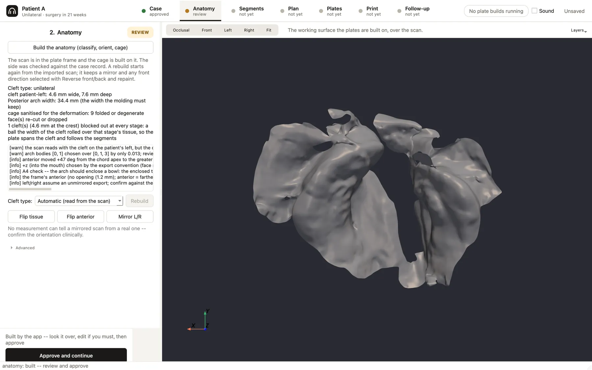
First build: the scan reads with the cleft on the patient's left, but the case record says right. The app warns rather than guessing. This scanner's export is a mirror image of the patient.
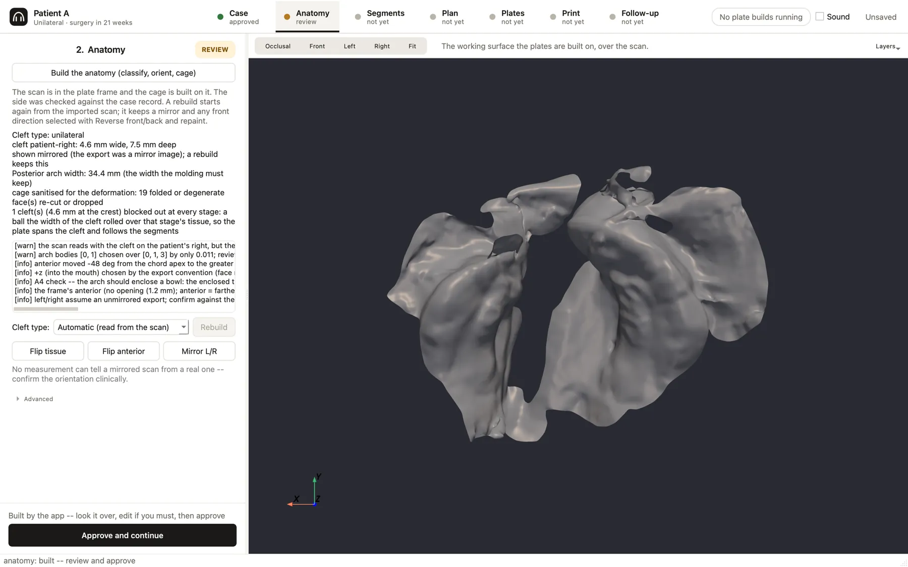
After the clinician confirms the mirroring and presses Mirror L/R, the anatomy reads "cleft patient-right, shown mirrored", with its width, depth and posterior arch width.
You see
The classifier's reading (cleft type and side, measurements), its findings, the fitted frame and the working surface.
You do
Check the cleft type and side against the patient.
If it is wrong, declare the type and rebuild. The app then looks for a reading of that type that passes every check, or stops; it never invents a cleft.
If the side disagrees with the case record, confirm it clinically and use Mirror L/R. No measurement can tell a mirrored scan from a real one.
If the front of the arch is reversed, use Reverse front/back.
Approve.
Building Anatomy again replaces the working surface and any painting. The app asks before it does.
Step 3
Segments
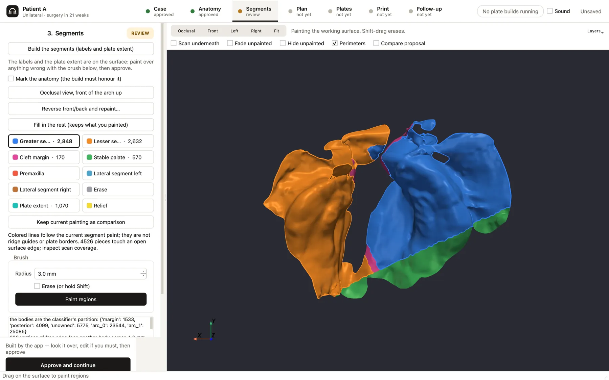
The painted proposal: greater and lesser segments, cleft margin, stable palate and plate extent.
You see
The painted segments, the cleft margin, the stable palate and the plate extent.
You do
Paint or erase where the proposal is wrong.
Use Fill in the rest to complete the painting around your strokes without changing them.
Approve.
Your strokes are instructions. Rebuilding with Fill in the rest keeps them; building the segments from scratch asks first, because it would replace them.
Step 4
Plan: key poses
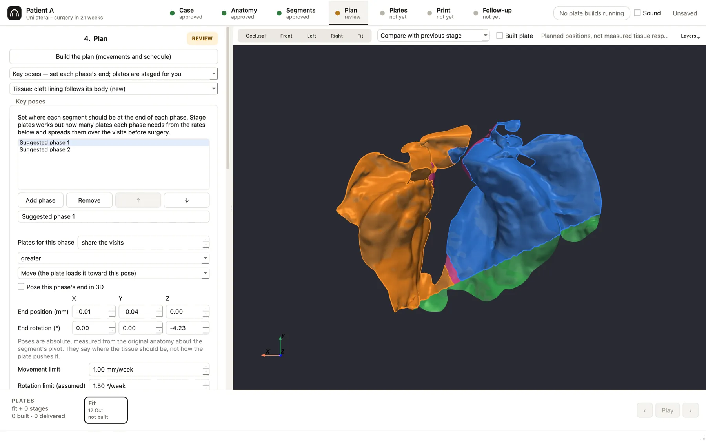
Key poses: each phase's end pose per segment, with its purpose.
Treatment is a list of phases, for example expand, retract, then approximate. For each phase you drag each segment to where it should end up and give it a purpose:
Move: the plate pushes the segment toward the pose.
Grow: the plate is relieved ahead of the segment and never pushes it.
Hold: the segment stays where the last phase left it.
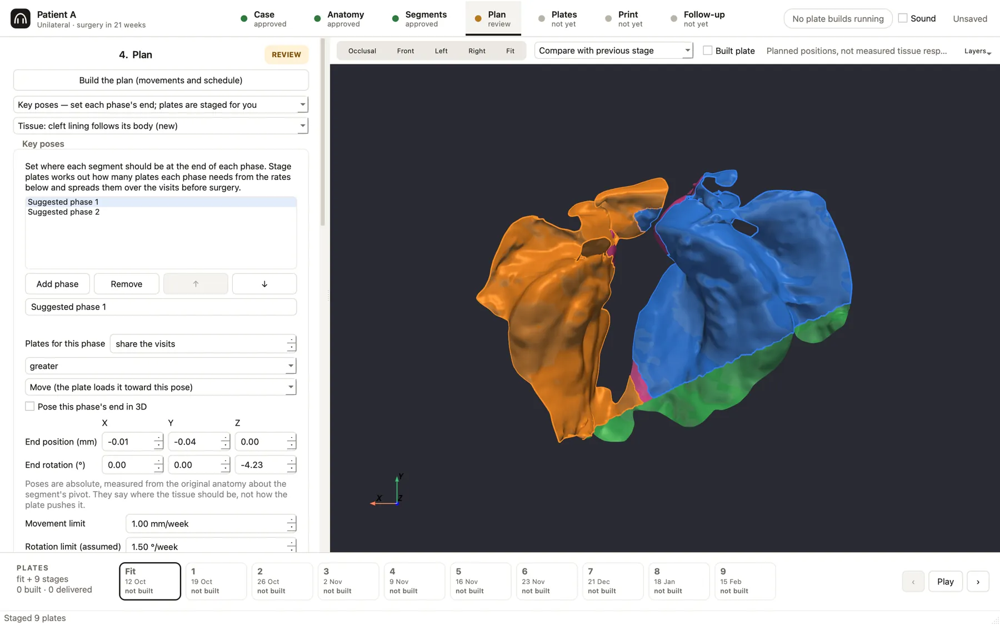
After Stage plates: a fit plate and nine stages, one per visit before surgery, shown in the plate strip with their dates. The dates here are invented.
The app does
Stages plates between your poses and spreads them over every visit before surgery, within ceilings of 1 mm per week and per plate (at the fastest-moving point) and an assumed 1.5° per week. No plate is dated on or after surgery. If the plates do not fit, nothing is compressed; the app tells you by how much.
You do
Pose each phase, then press Stage plates.
For each stage, read the movement findings and approve it. A stop needs a written reason.
Suggest (research) can propose phases for you to edit.
Plates already made never change. Restaging keeps delivered plates exactly as they are.
Step 5
Plates
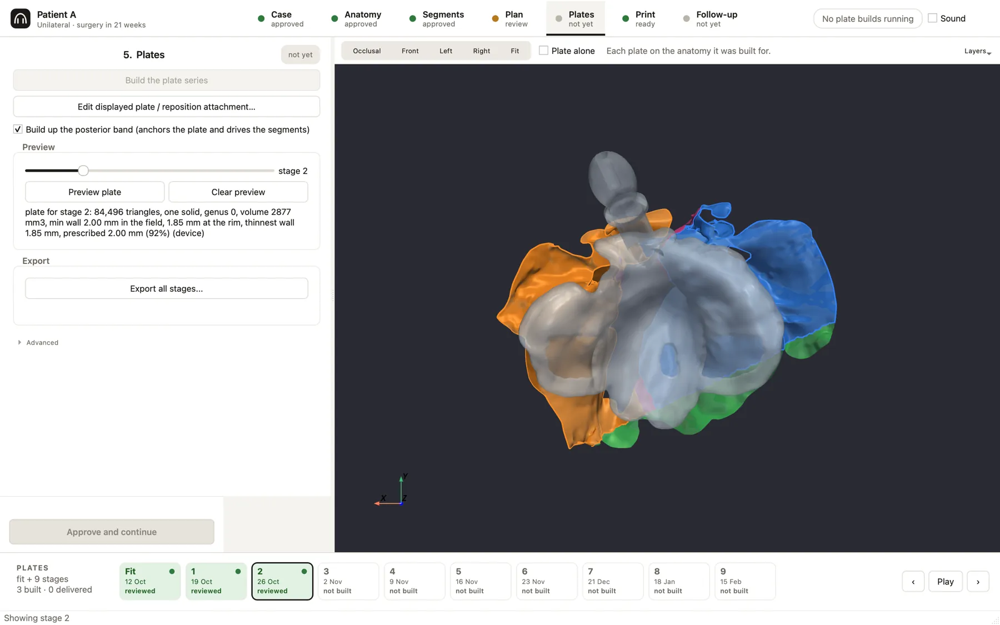
A built plate, translucent, over the anatomy it was made for, with its retention arm. The panel gives the measured wall beside the prescribed one: thinnest wall 1.85 mm, prescribed 2.00 mm.
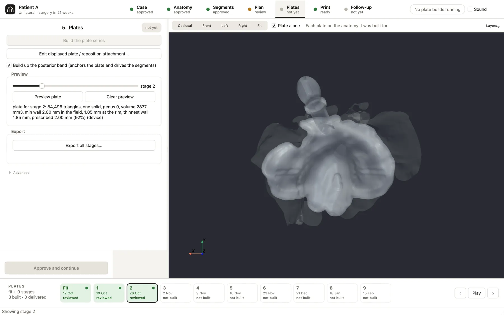
Plate alone hides the anatomy so you can look at the plate itself.
Each approved stage's plate builds in the background while you keep working. Every plate gets two verdicts:
Print: one watertight piece, no holes, and the thinnest wall measured against the 1.0 mm print bar. The measured wall is shown beside the wall you prescribed.
Fit: how the plate seats on the tissue and whether it activates as planned. A measurement that could not be read says NOT MEASURED; it is never a pass.
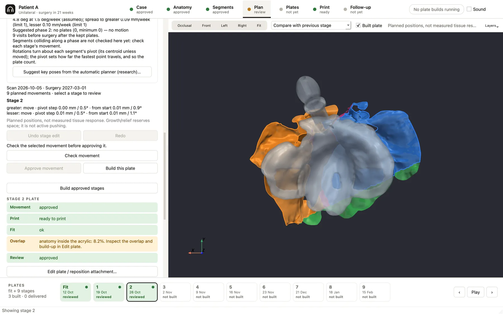
The plate's verdict card: movement approved, ready to print, fit ok, anatomy overlap flagged for inspection, review approved.
You see
Each plate alone or over its anatomy, its verdict rows, the tissue overlap, and any inferred flange drawn ghosted.
You do
Read the findings. A held plate shows why.
Optionally extend the flange, draw the plate border, add the posterior build-up, or edit the plate directly (arms, add, remove, smooth).
Approve each plate's review. Approving over a hold needs a written reason, which is kept.
When a plate is given to the patient, mark it delivered: it is then locked.
Step 6
Print
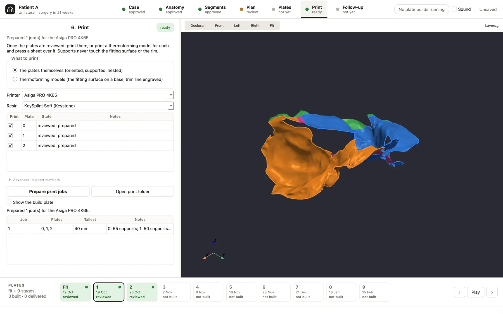
Three reviewed plates prepared as one job for an Asiga PRO 4K65 in KeySplint Soft.
You see
The route (the plates themselves, or thermoforming models), the printer, the resin or sheet, the reviewed plates available, and the job layout.
You do
Choose the route and profiles, then Prepare print jobs.
Open the print folder and read the job sheet, including any holds.
Import build.3mf or build.stl into your printer's software.
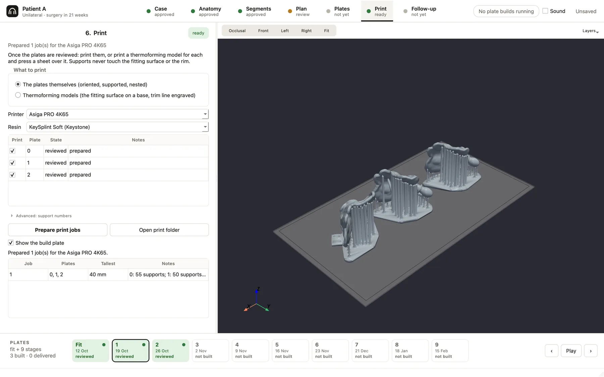
The bed preview: plates oriented and supported, with supports kept off the fitting surface and rim.
Step 7
Follow-up
You see
Three tabs. Visit imports a new scan; Deviation shows a map of predicted against actual; Response shows the cleft gap over time.
You do
Import the visit's scan and choose the stage it should match; it is registered on the stable palate.
Read the deviation against the scan's own floor of about 0.9 mm; smaller differences are not findings.
Record the visit, or adopt the scan and re-plan from it. Delivered plates stay as they are.
Good habits
Working safely with MoldStudio
Your work is kept
Unsaved edits are saved as recovery points, and the app offers them back when you reopen the case. File › Save is still the checkpoint.
Long jobs can be cancelled
Building a step shows a Cancel button. It stops at the next checkpoint, and nothing is adopted.
Updates install when you quit
When a new release is out, MoldStudio offers it with its notes. Choose Install when I quit. If it changes how plates are built, it says so: open cases will need re-approval, so finish the case first.
Undo
Edit › Undo reverts the last thing you did: a paint stroke, a cage edit, a key-pose change or a stage edit. It does not bring back an approval that was withdrawn.